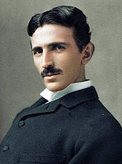
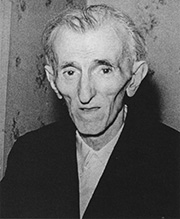

 
Nikola Tesla (Никола Тесла; ur. 10 lipca 1856 w Smiljanie, zm. 7 stycznia 1943 w Nowym Jorku) – amerykański inżynier serbskiego[a][1] pochodzenia, elektrotechnik, wynalazca; od 1884 mieszkał w Stanach Zjednoczonych. Tesla był konstruktorem wielu urządzeń do wytwarzania i wykorzystania prądu przemiennego, konkurując skutecznie z Thomasem A. Edisonem, który uznawał tylko prąd stały. Był autorem blisko 300 patentów, które chroniły jego 125 wynalazków w 26 krajach[2] (spotykana informacja o ponad 700 patentach[3] jest sprzeczna z danymi literaturowymi[2]), głównie rozmaitych urządzeń elektrycznych, z których najsławniejsze to: silnik elektryczny i prądnica prądu przemiennego, autotransformator, dynamo rowerowe, radio, elektrownia wodna (na wodospadzie Niagara)[4], bateria słoneczna, turbina talerzowa i transformator Tesli (rezonansowa cewka wysokonapięciowa). Nikola Tesla był m.in. twórcą pierwszych urządzeń zdalnie sterowanych drogą radiową. Początkowo za twórcę radia uważano Guglielma Marconiego, jednak w 1943 Sąd Najwyższy Stanów Zjednoczonych przyznał prawa patentowe Tesli[5]. Rozprawa rozstrzygnęła się po śmierci wynalazcy, przez co powszechnie za twórcę radia uznaje się Marconiego, mimo iż przyznał się on do wykorzystania wcześniejszych prac Tesli w zbudowaniu radia. W 1916 został wyróżniony Medalem Edisona „za wybitne osiągnięcia we wczesnych pracach nad prądem wielofazowym i wielkiej częstotliwości”[6].
Nikola Tesla urodził się w serbskiej rodzinie we wsi Smiljan w Chorwacji, ówcześnie należącej do monarchii austriackiej. Był synem prawosławnego prezbitera Milutina Tesli i Georginy Mandić (nazywanej Dziuką)[7]. Jego ojciec chciał, aby również Nikola został kapłanem, jednak na skutek nacisku miejscowego nauczyciela, który wystarał się o stypendium dla Nikoli, został on ostatecznie wysłany na studia inżynierskie na politechnikę w Grazu. Na uczelni zwrócił na siebie uwagę profesora elektrotechniki, który pomógł mu podjąć pracę w urzędzie telegraficznym w Budapeszcie. Prawdopodobnie tam Tesla wpadł na pomysł konstrukcji obrotowego silnika na prąd przemienny, który mógłby być też prądnicą. Gdy urząd telegraficzny został sprzedany, Tesla pojechał do Paryża, gdzie podjął pracę w Continental Edison Company, francuskiej firmie produkującej prądnice, silniki i oświetlenie w oparciu o patenty Thomasa A. Edisona. Szybko uzyskał opinię osoby, która jest w stanie rozwiązać każdy problem. Jednak gdy naprawił instalację na stacji kolejowej w Strasburgu i tym samym uratował dobre imię firmy, nie dostał za swą pracę należytej zapłaty, złożył wymówienie i za radą przyjaciela udał się do Stanów Zjednoczonych, aby spotkać się z Edisonem[
Podczas pierwszego spotkania w laboratorium Edisona, Tesla był pod wrażeniem wielkiego wynalazcy. Dzięki swoim dokonaniom w Europie i dobrym rekomendacjom dostał posadę w laboratorium Edisona. Nie była to dla Tesli wymarzona praca, lecz w ciągu kilku tygodni nadarzyła się okazja i mógł zaprezentować swoje niesamowite umiejętności. Dostał awans i otrzymał od Edisona zlecenie, aby doprowadził do poprawy wydajności generowania prądu w elektrowniach Thomasa A. Edisona[8]. Edison obiecał, że jeśli wydajność elektrowni wzrośnie o 50%, Tesla otrzyma 50 000 dolarów nagrody. Wykonanie tego zadania zajęło Tesli prawie cały rok, po czym zaproponował Thomasowi Edisonowi przejście w jego elektrowniach na produkcję prądu przemiennego (wytwarzały one wtedy prąd stały), co pozwoliłoby poprawić ich wydajność o kolejne 50%. Edison z niewyjaśnionych do dzisiaj przyczyn nie akceptował prądu przemiennego i nie zapłacił Tesli należnego wynagrodzenia, wskutek czego Tesla zrezygnował z pracy. Przez następny rok, od wiosny 1886 r. do wiosny 1887 r. Tesla musiał się podejmować rozmaitych prac, aby mieć za co przeżyć. Gdy pracował jako kopacz rowów, udało mu się nawiązać kontakt z właścicielami Western Union Telegraph Company, którzy pomogli mu założyć Tesla Electric Light Company[8].